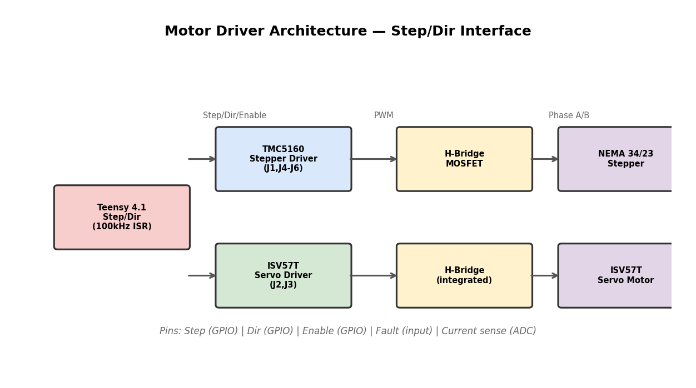

This document provides the electrical schematics reference for the Contoso Robotics CoBot Pro 500 and CoBot Pro 700 collaborative robots. It covers power distribution, motor driver circuits, sensor interface electronics, connector pinouts, fuse and breaker ratings, and EMC design considerations. Both models share an identical electrical architecture, differing only in motor winding specifications and power supply capacity. For cable routing and physical installation, refer to the Installation Manual in the Support documentation. For safety I/O wiring to the SC-100 safety controller, see the Safety Controller Configuration guide in the Support documentation.
The CoBot Pro control cabinet converts single-phase AC mains power into three isolated DC voltage rails used throughout the system:
A 48 VDC / 1500 W switch-mode power supply (LLC resonant topology, 93% efficiency) provides the main DC bus for all motor drivers. The 48 VDC rail features:
An isolated 24 VDC / 120 W DC-DC converter (forward topology) powers the main controller board (ARM Cortex-A72 + R5F), Safety Controller SC-100, EtherCAT slave controllers, digital I/O modules, and the teach pendant. This rail is backed by a 2200 µF bulk capacitor providing approximately 50 ms of hold-up time during brief power interruptions, sufficient for the SC-100 to execute a controlled STO sequence.
A 5 VDC / 20 W low-noise linear regulator (LDO, PSRR > 80 dB) supplies the joint encoders, FTS-600 force-torque sensor excitation, and analog signal conditioning circuits. The LDO is post-regulated from the 24 V rail and includes a dedicated star-ground return to minimize ground loop interference with sensor measurements. Output noise: < 10 µV RMS (10 Hz – 100 kHz).

Each of the six joints is driven by a Contoso Robotics JSD-200 servo drive module implementing Field-Oriented Control (FOC) of a 3-phase Brushless DC (BLDC) permanent magnet synchronous motor:
Three in-line Hall-effect current sensors (Allegro ACS70331, ±5 A / ±20 A variant depending on joint) measure phase currents for FOC. The sensors are positioned on the low-side return path of each phase, sampled by the DSP's 16-bit ADC at 20 kHz (synchronized to PWM center). Current measurement accuracy: ±1% of reading + 10 mA offset. The FOC algorithm uses Clarke and Park transforms to convert 3-phase currents (Ia, Ib, Ic) to the rotating d-q reference frame, where PI controllers regulate Id (flux) and Iq (torque) independently.
| Parameter | Joints 1–3 (Pro 500) | Joints 4–6 (Pro 500) | Joints 1–3 (Pro 700) | Joints 4–6 (Pro 700) |
|---|---|---|---|---|
| Motor Type | BLDC frameless | BLDC frameless | BLDC frameless | BLDC frameless |
| Pole Pairs | 7 | 5 | 11 | 7 |
| Rated Torque | 15 Nm | 5 Nm | 30 Nm | 12 Nm |
| Peak Torque | 45 Nm | 15 Nm | 90 Nm | 36 Nm |
| Torque Constant (Kt) | 0.65 Nm/A | 0.32 Nm/A | 0.85 Nm/A | 0.52 Nm/A |
| Gear Ratio (Harmonic) | 100:1 | 80:1 | 120:1 | 100:1 |
The sensor interface board aggregates analog sensor signals and conditions them for digital acquisition:
Each joint's 20-bit absolute encoder communicates with the main controller via a dedicated SPI channel (6 SPI channels total, directly from the Cortex-A72 SPI peripheral). Data transfer: 20 MHz SPI clock, 32-bit frame (20 data bits + 6 status bits + 6 CRC bits). The encoder data is also independently read by the Safety Controller SC-100's FPGA via a separate, physically isolated SPI bus for cross-channel verification.
Eight NTC thermistors (10 kΩ at 25°C, B=3950) monitor motor winding temperatures (6 channels) and controller board hot spots (2 channels). Each thermistor is connected in a voltage divider with a precision 10 kΩ ± 0.1% resistor, producing a 0–3.3 V signal proportional to temperature. Linearization and Steinhart-Hart equation conversion are performed in software. Over-temperature alarm thresholds: 75°C (warning), 85°C (shutdown via STO).
| Pin | Signal | Color |
|---|---|---|
| 1 | TX+ (TIA/EIA-568B pair 2) | Orange/White |
| 2 | RX+ (TIA/EIA-568B pair 3) | Green/White |
| 3 | TX− | Orange |
| 4 | RX− | Green |
| Shield | Cable shield → chassis ground | — |
| Pin | Signal | Direction |
|---|---|---|
| 1 | DI0 | Input (PNP, 24 V) |
| 2 | DI1 | Input (PNP, 24 V) |
| 3 | DO0 | Output (PNP, 0.5 A max) |
| 4 | DO1 | Output (PNP, 0.5 A max) |
| 5 | +24 V (sensor supply out) | Power |
| 6 | 0 V (ground) | Power |
| 7 | AI0 (0–10 V) | Input (analog) |
| 8 | AI1 (0–10 V) | Input (analog) |
Standard Gigabit Ethernet (1000BASE-T) using a standard RJ45 jack with integrated magnetics and LED indicators (green = link, amber = activity). Auto-MDI/MDIX supported.
Dedicated connector for Safety Controller SC-100 I/O. See the Safety Controller Configuration guide for the complete safety I/O pinout and wiring diagrams.
| Location | Type | Rating | Purpose |
|---|---|---|---|
| AC Input | MCB, C-curve | 16 A | Main branch circuit protection |
| 48 V Bus | Fuse, fast-blow (HRC) | 40 A (Pro 500) / 63 A (Pro 700) | Motor bus short-circuit protection |
| Per Joint Motor | PTC resettable fuse | 15 A hold / 30 A trip | Individual joint overcurrent protection |
| 24 V Logic | Fuse, slow-blow | 6.3 A | Logic supply protection |
| 5 V Sensor | Fuse, fast-blow | 4 A | Sensor supply protection |
| USB Ports (×2) | PTC resettable fuse | 0.5 A per port | USB overcurrent protection |
| Teach Pendant (USB-C) | Electronic fuse (eFuse) | 3 A, 5 V | Pendant power protection with soft-start |
The CoBot Pro meets EMC requirements per EN 61326-1 (industrial) and EN 55032 Class A. Key design measures include:
Document version 4.2.0 | Last updated: 2025-01-11 | Contoso Robotics Engineering — Electrical Team